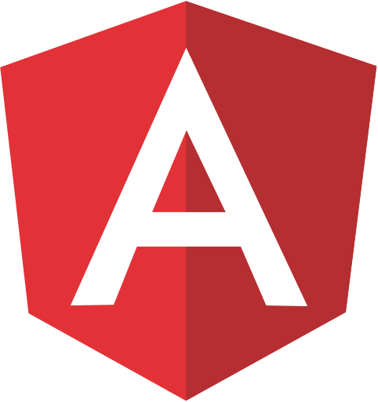

Angular for Noobs <3
Whoami
Jhones Gonçalves
Operador DevOps na ESX, um dos organizadores da comunidade DevelopersBR, super apaixonado por tecnologia e eventos. Graduado em Ánalise e desenvolvimento de sistemas pelo uninove e estudante de pós graduação em Arquitetura de Software na PUC.
Face @jhones.io1
Twitter @jhones_io
Instagram @jhones.io
O que é SPA?
A single-page application is an app that works inside a browser and does not require page reloading during use.

Porque usar SPA?
- rápida navegação
- divisão de responsabilidade
- diminui o processamento no back end
- legibilidade
Code Exemplo em Angular!
O que é Angular?
Angular is a platform that makes it easy to build applications with the web. Angular combines declarative templates, dependency injection, end to end tooling, and integrated best practices to solve development challenges.

Porque usar angular?
- fácil de aprender
- usa typescript S2
- fácil manutenção
- comunidade muito grande
Code Exemplo!
npm install -g @angular/cli
ng new my-appDemo


jhones@developers-sp.com.br